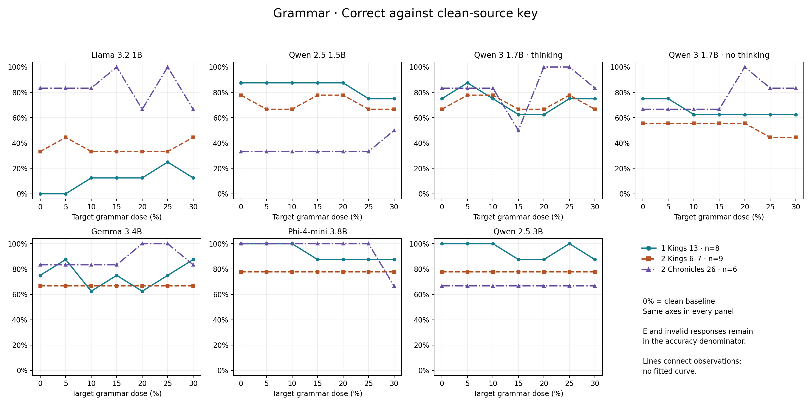
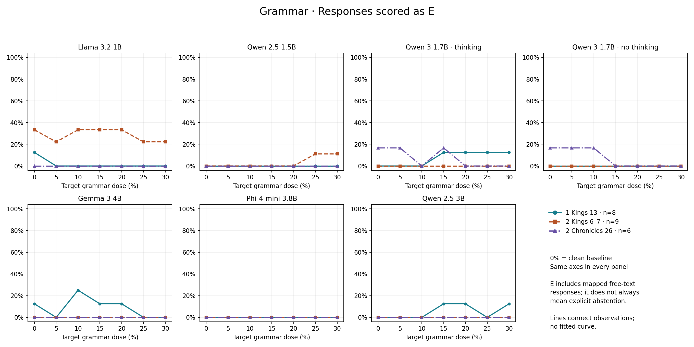

1 Kings 13: 8 active questions · 2 Kings 6–7: 9 active questions · 2 Chronicles 26: 6 active questions. 1127 responses including clean baselines.
Every passage uses the same model weights, prompts, scoring rules, temperature 0, 8,192-token context and 2,500-token generation cap. The cap includes thinking. Scores are against the clean-source key. Wrong A–D answers, E and invalid outputs remain separate. The held 2 Kings 7:17–18 question is excluded. Each point has only 6–9 questions; the lines are descriptive, not fitted dose–response curves.
Grammar doses count affected clean source characters with ±2 percentage-point tolerance. The six doses are independently selected. The generation bank uses a soft preference of 30% misselection / 70% misordering by error instances.


| Reader | 0% | 5% | 10% | 15% | 20% | 25% | 30% |
|---|---|---|---|---|---|---|---|
| Llama 3.2 1B | 0 | 0 | 1 | 1 | 1 | 2 | 1 |
| Qwen 2.5 1.5B | 7 | 7 | 7 | 7 | 7 | 6 | 6 |
| Qwen 3 1.7B · thinking | 6 | 7 | 6 | 5 | 5 | 6 | 6 |
| Qwen 3 1.7B · no thinking | 6 | 6 | 5 | 5 | 5 | 5 | 5 |
| Gemma 3 4B | 6 | 7 | 5 | 6 | 5 | 6 | 7 |
| Phi-4-mini 3.8B | 8 | 8 | 8 | 7 | 7 | 7 | 7 |
| Qwen 2.5 3B | 8 | 8 | 8 | 7 | 7 | 8 | 7 |
Passages, choices, individual responses, E counts and thinking traces
| Reader | 0% | 5% | 10% | 15% | 20% | 25% | 30% |
|---|---|---|---|---|---|---|---|
| Llama 3.2 1B | 3 | 4 | 3 | 3 | 3 | 3 | 4 |
| Qwen 2.5 1.5B | 7 | 6 | 6 | 7 | 7 | 6 | 6 |
| Qwen 3 1.7B · thinking | 6 | 7 | 7 | 6 | 6 | 7 | 6 |
| Qwen 3 1.7B · no thinking | 5 | 5 | 5 | 5 | 5 | 4 | 4 |
| Gemma 3 4B | 6 | 6 | 6 | 6 | 6 | 6 | 6 |
| Phi-4-mini 3.8B | 7 | 7 | 7 | 7 | 7 | 7 | 7 |
| Qwen 2.5 3B | 7 | 7 | 7 | 7 | 7 | 7 | 7 |
Passages, choices, individual responses, E counts and thinking traces
| Reader | 0% | 5% | 10% | 15% | 20% | 25% | 30% |
|---|---|---|---|---|---|---|---|
| Llama 3.2 1B | 5 | 5 | 5 | 6 | 4 | 6 | 4 |
| Qwen 2.5 1.5B | 2 | 2 | 2 | 2 | 2 | 2 | 3 |
| Qwen 3 1.7B · thinking | 5 | 5 | 5 | 3 | 6 | 6 | 5 |
| Qwen 3 1.7B · no thinking | 4 | 4 | 4 | 4 | 6 | 5 | 5 |
| Gemma 3 4B | 5 | 5 | 5 | 5 | 6 | 6 | 5 |
| Phi-4-mini 3.8B | 6 | 6 | 6 | 6 | 6 | 6 | 4 |
| Qwen 2.5 3B | 4 | 4 | 4 | 4 | 4 | 4 | 4 |
Passages, choices, individual responses, E counts and thinking traces
| Passage | Mapped responses | E from mapping | Invalid | Token limit |
|---|---|---|---|---|
| 1 Kings 13 | 1 | 1 | 1 | 1 |
| 2 Kings 6–7 | 25 | 20 | 0 | 0 |
| 2 Chronicles 26 | 5 | 0 | 0 | 0 |
The original GPT-4.1-mini mapper receives only unmatched nonempty primary-reader responses and answer choices. An E supplied by mapping is distinguished from a direct E response. One generation per question and setting. No live pilot passages were changed.